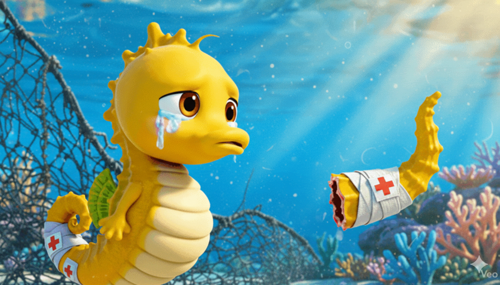

데빌기업은 더 큰 이윤을 남기려고
불법 그물망을 사용했습니다
불법 그물망은 구멍이 촘촘해
해양생물의 생명을 위협하였습니다.
몸집이 작은 해마들 조차 촘촘한 그물에 엉켜
꼬리가 잘려나갔습니다.
해마의 개체 수가 줄어드는 것을 감지한
환경보호단체와 언론이 관심을 갖기 시작되자
불법적인 행태를 감추기 위해 그물을 잘라
바다 속에 버리고 도망쳐버렸습니다.

미션완료